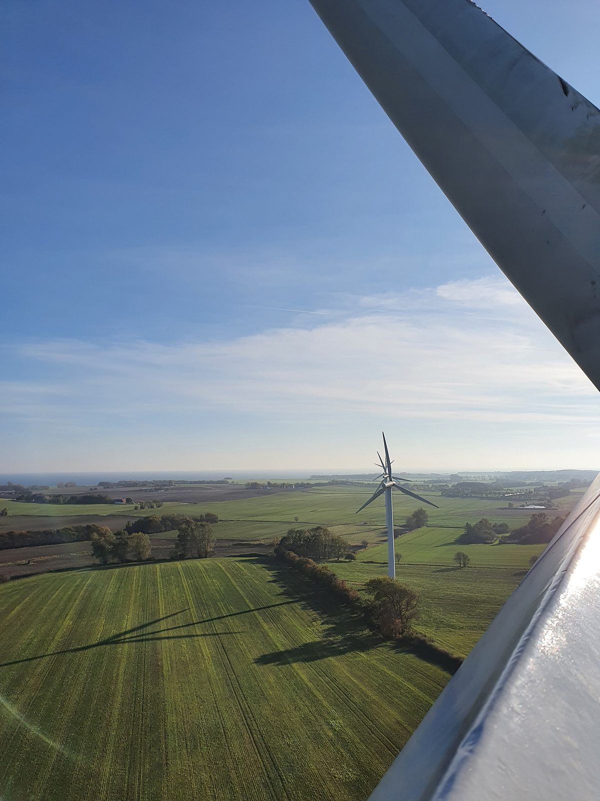

전남광주 햇빛소득마을 ESS 설치비 지방비 30% 부담…"국비 50%·VPP 사업자 50%로 바꿔야"

1·2차 공모 126곳 선정됐지만 전국 2차 436곳 중 413곳 조건부…호남 상반기 출력제어 8만MWh 넘고 접속 대기 2,000여MW, 1MW 이하 우선접속은 12월 16일 시행
전남광주통합특별시가 햇빛소득마을에 들어가는 에너지저장장치(ESS) 설치비를 지금의 정부 40%·지자체 30%·가상발전소(VPP) 사업자 30% 분담에서, 배전망 ESS 구축사업과 같은 국비 50%·VPP 사업자 50% 방식으로 바꿔 달라고 정부에 요구했다. 1·2차 공모에서 126곳이 뽑힌 시는 상당수 마을이 ESS 설치를 전제로 사업을 진행해야 하는 만큼, 여러 마을을 한꺼번에 추진하면 지방비가 감당하기 어렵다며 ESS 설치 부지 등 세부 기준도 서둘러 정해 달라고 했다. 행정안전부 자료로는 올해 2차 공모에서 선정된 전국 436개 마을 가운데 413곳이 부지·자금 계획·계통 연계를 보완하는 조건으로 뽑혔고, 호남권에서는 올해 상반기 출력제어 탓에 생산하지 못한 전력이 8만MWh를 넘었으며 계통 접속을 기다리는 물량도 2,000여MW에 이른다. 계통포화지역의 1MW 이하 공익목적 재생에너지 발전에 우선접속 근거를 둔 개정 전기사업법은 12월 16일 시행되지만, 세부 기준과 절차가 아직 없고 접속 우선권만으로 전력망 용량이 늘지는 않는다는 지적이 나온다. 앞선 사례로 광주 남구 신효천마을은 92가구 가운데 64개 주택에 3kW씩 태양광을 달아 마을 소비전력의 약 73%를 채우고 58.5kW 공용발전소 수익을 공동복지에 써 왔고, 경북 안동 임하댐에서는 33개 마을법인이 47.2MW 수상태양광에 50억 원을 투자해 20년 동안 222억 원이 지역에 돌아올 것으로 전망된다. 시는 녹색에너지연구원과 함께 신청 마을의 사업계획서 작성과 협동조합 설립을 돕고 선정 마을 교육·현장점검으로 단계별 관리를 강화하겠다고 밝혔고, 이순형 동신대 전기공학과 교수는 "햇빛소득마을의 의미는 전기가 아니라 소유구조에 있다"고 말했다.
시민에너지 관점
ESS 설치비의 30%를 지자체가 떠안는 구조에서는 선정 마을이 늘수록 지방 재정이 먼저 막히고, 126곳이 '선정'에서 '발전'으로 넘어가는 속도를 마을의 의지가 아니라 저장장치 예산이 정하게 된다. 국가가 저장장치 비용을 더 지면 사업자 배만 불린다는 우려가 나올 수 있지만, 스코틀랜드 에이그섬은 2008년부터 주민 공동체가 소유한 섬 전력망에 풍력·소수력·태양광과 배터리를 함께 묶어 스스로 전기를 대 왔고, 저장장치도 얼마든지 주민의 자산이 될 수 있음을 보여 줬다. 배터리와 접속 설비까지 마을이 함께 소유하고 관리 책임을 나누면, 공공 재정은 외부 사업자의 이익이 아니라 주민 공동 자산을 쌓는 데 쓰인다. 정부는 ESS 분담 비율을 배전망 사업 수준으로 맞추면서, 그 저장장치의 지분 일부를 마을 협동조합이 가질 수 있도록 조건을 함께 정해야 한다.
출처: 광주매일신문 2026-10-27 서형우 원문 보기
全南光州の日差し所得村、ESS設置費の地方負担30%…「国費50%・VPP事業者50%に改めるべき」
1・2次公募で126カ所が選定されたが全国2次436カ所のうち413カ所は条件付き…湖南の上半期出力制御は8万MWh超、接続待ち2,000MW余り、1MW以下の優先接続は12月16日施行
全南光州統合特別市は、日差し所得村に必要なエネルギー貯蔵装置（ESS）の設置費について、現在の政府40%・自治体30%・仮想発電所（VPP）事業者30%という分担を、配電網ESS構築事業と同じ国費50%・VPP事業者50%の方式に改めるよう政府に求めた。1・2次公募で126カ所が選ばれた市は、多くの村がESS設置を前提に事業を進めなければならず、複数の村を同時に進めると地方費が持たないとして、ESS設置用地などの細部基準も早く定めるよう要請した。行政安全部の資料によると、今年の2次公募で選ばれた全国436村のうち413カ所は用地・資金計画・系統連系の補完を条件とする選定で、湖南圏では今年上半期に出力制御のため発電できなかった電力が8万MWhを超え、系統接続を待つ容量も2,000MW余りに達している。系統飽和地域で1MW以下の公益目的の再生可能エネルギー発電に優先接続の根拠を設けた改正電気事業法は12月16日に施行されるが、細部の基準や手続きはまだなく、接続の優先権だけでは送配電網の容量は増えないとの指摘が出ている。先行事例として、光州南区のシンヒョチョン村は92世帯のうち64戸に3kWずつ太陽光を設置して村の消費電力の約73%をまかない、58.5kWの共用発電所の収益を共同福祉に充ててきたほか、慶尚北道安東の臨河ダムでは33の村法人が47.2MWの水上太陽光に50億ウォンを投資し、20年間で222億ウォンが地域に還元される見通しだ。市は緑色エネルギー研究院とともに申請村の事業計画書作成や協同組合設立を支援し、選定村への教育・現場点検で段階別の管理を強めるとしており、イ・スンヒョン東新大学電気工学科教授は「日差し所得村の意味は電気ではなく所有構造にある」と語った。
市民エネルギーの視点
ESS設置費の30%を自治体が背負う仕組みでは、選定村が増えるほど地方財政が先に行き詰まり、126カ所が「選定」から「発電」へ進む速さを村の意志ではなく蓄電装置の予算が決めることになる。国が蓄電費用を多く負えば事業者が得をするだけだとの懸念もあろうが、スコットランドのエッグ島では2008年から住民共同体が所有する島の電力網で風力・小水力・太陽光と蓄電池を組み合わせて自ら電気をまかなっており、蓄電装置も住民の資産になりうることを示してきた。蓄電池や接続設備まで村が共に所有し管理の責任を分かち合えば、公的資金は外部事業者の利益ではなく住民の共同資産を積み上げるために使われる。政府はESSの分担比率を配電網事業並みに改めると同時に、その蓄電装置の持ち分の一部を村の協同組合が持てるよう条件を定めるべきだ。
出典: 光州毎日新聞 2026-10-27 ソ・ヒョンウ 原文を読む
全南光州阳光收入村ESS安装费地方承担30%…"应改为国费50%、VPP运营商50%"
第1、2批公募共126个村入选，但全国第2批436个村中413个为附条件入选…湖南上半年弃电超8万MWh、待并网约2,000MW，1MW以下优先并网12月16日施行
全南光州统合特别市要求中央政府把阳光收入村所需储能系统（ESS）安装费的分担方式，从目前的政府40%、地方政府30%、虚拟电厂（VPP）运营商30%，改为与配电网ESS建设项目相同的国费50%、VPP运营商50%。该市在第1、2批公募中共有126个村入选，市方表示，许多村必须以安装ESS为前提推进项目，若多个村同时推进，地方财政将难以承受，并要求尽快确定ESS安装用地等细则。据行政安全部资料，今年第2批公募全国入选的436个村中，有413个是以补充用地、资金计划和电网接入为条件入选的；湖南地区今年上半年因限电而未能发出的电量超过8万MWh，排队等待并网的容量也达约2,000MW。为电网饱和地区1MW以下公益性可再生能源发电提供优先并网依据的修订版《电力事业法》将于12月16日施行，但细则和程序尚未出台，也有意见指出仅靠优先接入权并不能增加电网容量。从已有案例看，光州南区Sinhyocheon村92户中有64户各装3kW太阳能，满足了全村约73%的用电，58.5kW公用电站的收益一直用于公共福利；庆尚北道安东临河坝则有33个村级法人向47.2MW水面光伏投资50亿韩元，预计20年间将有222亿韩元回馈当地。该市表示将与绿色能源研究院一起协助申请村编写项目计划书、设立合作社，并通过对入选村的培训和现场检查加强分阶段管理；东新大学电气工程系教授Lee Soon-hyung表示："阳光收入村的意义不在于电，而在于所有权结构。"
市民能源视角
在地方政府承担ESS安装费30%的结构下，入选村越多，地方财政越先卡住，126个村从"入选"走向"发电"的速度将由储能预算而不是村民的意愿决定。有人可能担心国家多承担储能费用只会让运营商获益，但苏格兰埃格岛自2008年起就在居民共同体所有的岛内电网上把风电、小水电、太阳能和蓄电池结合起来自行供电，证明储能设备同样可以成为居民的资产。如果蓄电池和并网设备也由村庄共同拥有、共同承担管理责任，公共财政就会用于积累居民的共同资产，而不是外部运营商的利润。政府在把ESS分担比例调整到配电网项目水平的同时，应一并规定让村级合作社可以持有这些储能设备的部分股份。
来源: 光州每日新闻 2026-10-27 Seo Hyeong-woo 查看原文
Jeonnam-Gwangju sunlight income villages carry 30% local share of ESS costs; city seeks "50% state, 50% VPP operators"
126 villages selected in the first two rounds, but 413 of 436 second-round villages nationwide were chosen on conditions; Honam curtailment topped 80,000 MWh in the first half with about 2,000 MW waiting for grid access; priority connection for projects of 1 MW or less takes effect December 16
Jeonnam-Gwangju Integrated Special City has asked the central government to change how the cost of energy storage systems (ESS) for its sunlight income villages is shared, from the current 40% national government, 30% local government and 30% virtual power plant (VPP) operators to the 50% state and 50% VPP-operator formula used for distribution-grid ESS projects. With 126 villages selected in the first two rounds of the national programme, the city says many of them can only proceed on the condition of installing ESS, and that running several projects at once would strain local budgets beyond what they can bear; it also asked for detailed rules, including on ESS sites, to be settled quickly. According to the Ministry of the Interior and Safety, 413 of the 436 villages selected nationwide in this year's second round were chosen on condition that they shore up land, financing plans or grid connection, while in the Honam region more than 80,000 MWh of output was lost to curtailment in the first half of this year and about 2,000 MW of capacity is waiting for grid access. An amended Electricity Business Act giving priority grid access to public-interest renewable projects of 1 MW or less in saturated areas takes effect on December 16, but detailed standards and procedures are not yet in place, and critics note that priority access alone does not add grid capacity. Among earlier examples, Sinhyocheon village in Nam-gu, Gwangju, fitted 3 kW of solar on each of 64 of its 92 households to cover about 73% of the village's electricity use and has put income from a shared 58.5 kW plant into community welfare, while at Imha Dam in Andong, North Gyeongsang, 33 village corporations invested 5 billion won in a 47.2 MW floating solar plant that is expected to return 22.2 billion won to the area over 20 years. The city said it is helping applicant villages draw up business plans and set up cooperatives with the Green Energy Institute and will tighten step-by-step oversight through training and site checks, and Lee Soon-hyung, a professor of electrical engineering at Dongshin University, said "the meaning of sunlight income villages lies not in the electricity but in the ownership structure."
Citizen Energy View
When local governments must cover 30% of ESS costs, local budgets run dry first as more villages are selected, and the pace at which 126 villages move from "selected" to "generating" is set by storage budgets rather than by the villages' own will. Some may worry that a larger state share of storage costs would only enrich operators, but on Scotland's Isle of Eigg the community-owned island grid has, since 2008, combined wind, small hydro, solar and batteries to supply its own electricity, showing that storage, too, can be a community asset. If villages jointly own the batteries and grid connections and share responsibility for running them, public money builds residents' common assets rather than outside operators' profits. As the government brings the ESS cost split in line with distribution-grid projects, it should also set conditions allowing village cooperatives to hold a stake in that storage.
Source: Gwangju Maeil Shinmun 2026-10-27 Seo Hyeong-woo Read the original